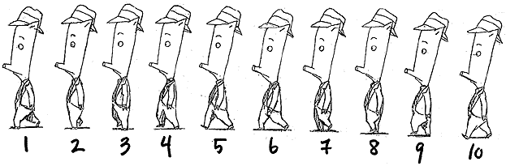
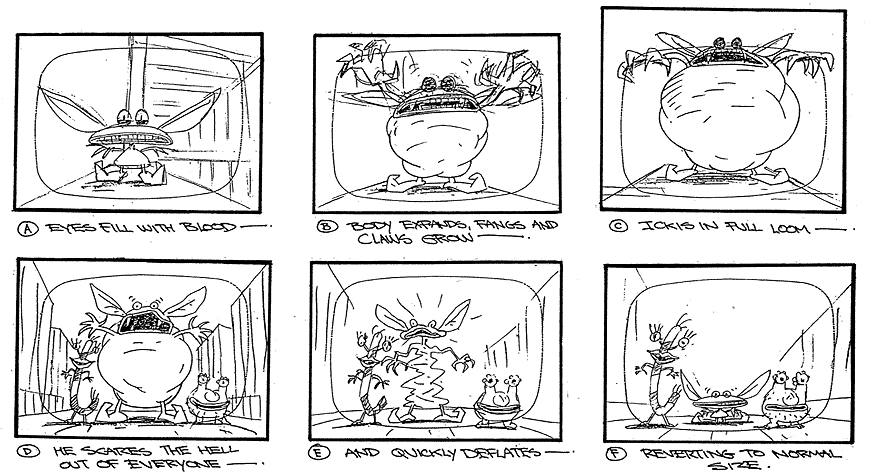
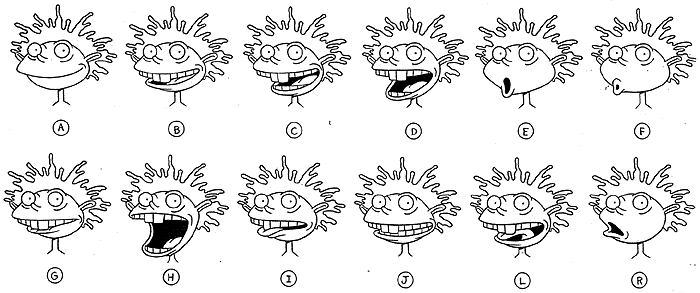

PART SIX:
ADVANCED ANIMATION DRAWING

After learning how to create characters from basic shapes, determining their height and body details, creating turnarounds and still shots of their movements and finally practicing enough to keep the figures "on model", it is time to begin animating! Animation usually uses 30 frames per second, and there are infinite numbers of ways to move your characters within this time-frame. A basic movement is a "walk-cycle", as you can see above with Cornfed. This walk-cycle is 10 frames long, and can be repeated as many times as necessary to give the illusion of continuous movement.

"Key frames" are frames that show a drastic change in movement or position of the characters or objects in a scene.
Looking at Ickis' transformation during his scare above, we can see 6 key frames are used to show him growing large and returning to normal size.
But in order for this scenes movement to look natural, many more than 6 frames need to be used.
"Inbetween frames" are done by animation artists known as "Tweeners", whose job it is to do the thousands upon thousands of drawings necessary to make the transitions between key frames seem seamless.
Many large animation companies have their "tweening" done overseas, and sometimes it can be done using advanced animation computer programs, but there are quite a few companies that hire potential animation artists on this laborious task as an entry level position.
It might be repetitive and a bit boring, but it is crucial to the completed work and could be a good way to get your foot in the door!

One of the most difficult tasks in animation is to get the characters' mouths in sync with what they are saying.
Since most cartoon characters talk in some form or another, the positions of their mouth and face need to be drawn in specific positions when they generate various sounds.
This is difficult because if the time frame is off even slightly, the cartoons will seem like badly dubbed kung fu movies.
Because of this, many cartoon bibles have phonetic mouth charts for each of the characters to help animators draw the movements for specific dialogue.